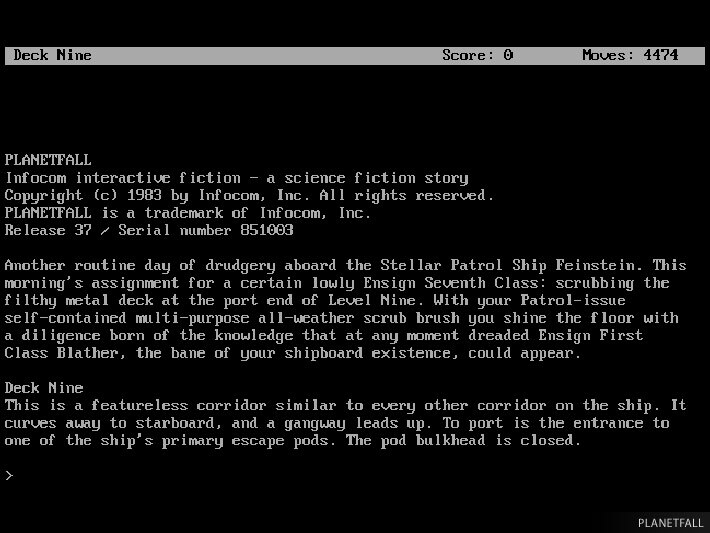

Interactive Fiction, Part 1
В четырёх голосовухах, которые идут друг за другом благодаря JS взятому со Stack Overflow...
Your browser doesn't support HTML5 audio. Here is a
link to the audio
instead.
